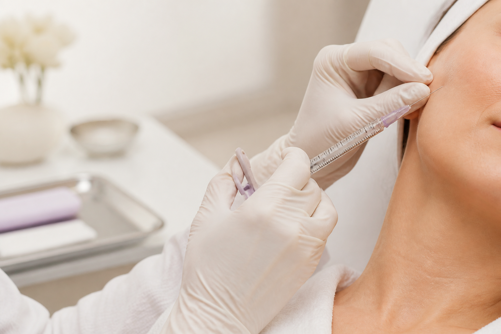
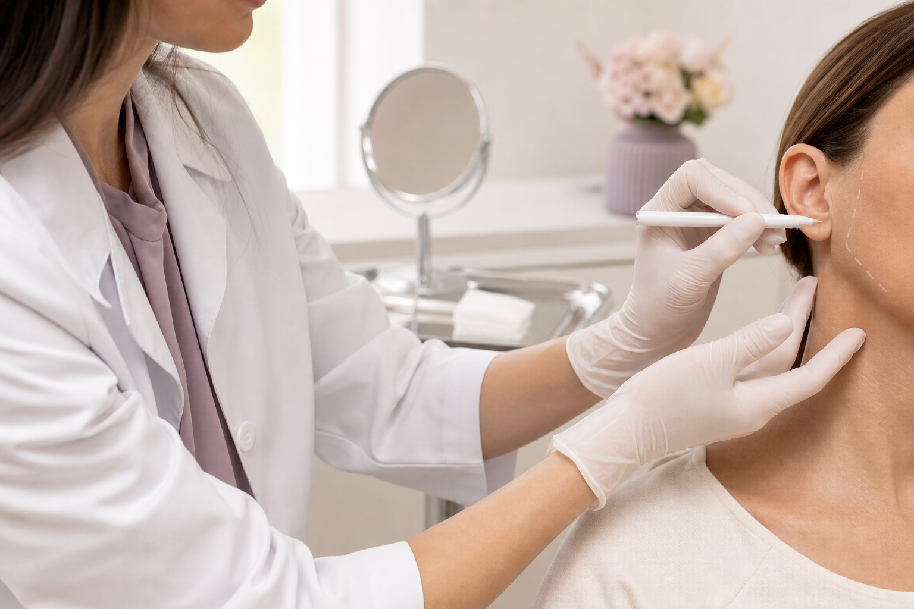
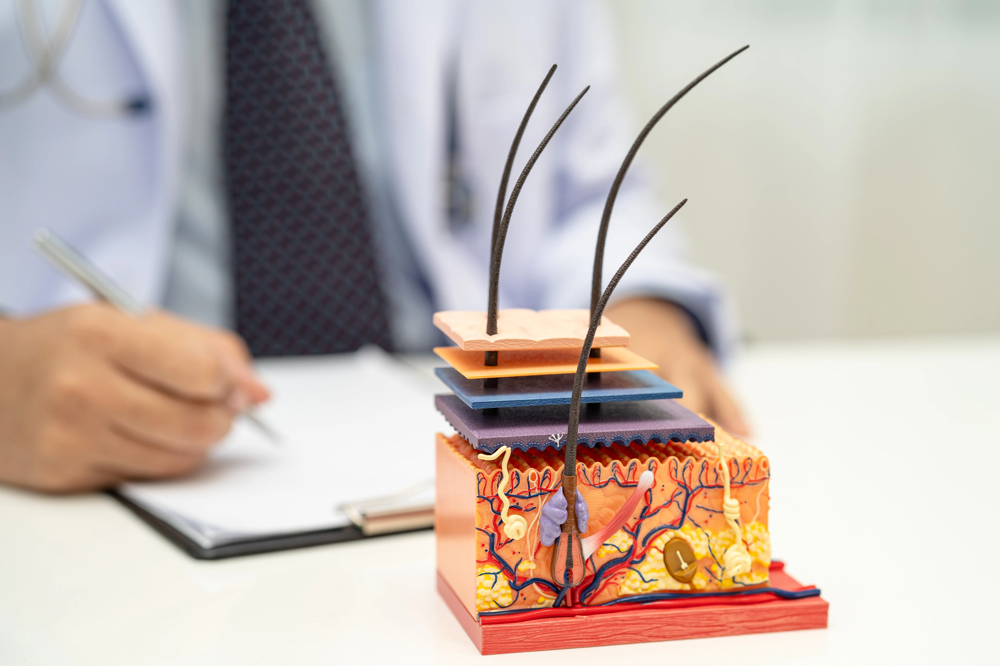
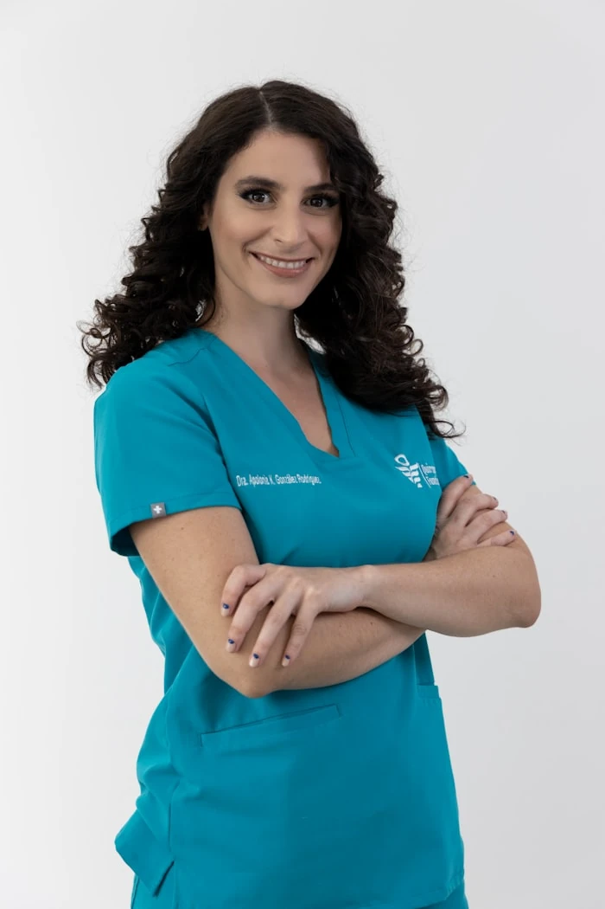

Para que costuma ser indicado
Flacidez difusa, perda de sustentação, pele fina e queda na qualidade da pele. A indicação é sempre individual.
Bioestimulador de colágeno no rosto
Vamos entender o que a sua pele precisa — antes de indicar qualquer coisa.
Bioestimulador pode ser um caminho. Mas a resposta honesta começa com uma avaliação, não com um kit pronto.
Agendar minha avaliaçãoAntes do procedimento, vem a escuta
Essa é uma das primeiras perguntas na consulta da Dra. Paula. Não para encaixar você em um procedimento, mas para entender a sua queixa de verdade.
Se você se reconheceu em alguma delas, a avaliação é o lugar certo para começar.
Informação para decidir com calma
É um injetável que estimula o seu próprio corpo a produzir colágeno novo, de dentro para fora. Diferente do preenchimento, o efeito é gradual e não acontece pela adição imediata de volume.
Flacidez difusa, perda de sustentação, pele fina e queda na qualidade da pele. A indicação é sempre individual.
O organismo é estimulado a produzir colágeno. Por isso, a evolução é progressiva e varia conforme cada pessoa.
Ácido poli-L-lático, como Sculptra, e hidroxiapatita de cálcio, como Radiesse, são exemplos. A escolha depende da avaliação.
O que acontece na prática
A aplicação é apenas uma parte do cuidado. Antes dela, existe avaliação, planejamento e uma indicação feita para a sua pele — não para uma tendência.


A Dra. Paula explica
Neste vídeo, a Dra. Paula fala sobre o que observar quando o rosto perde firmeza, por que a avaliação vem antes do procedimento e como construir expectativas reais.
Agendar minha avaliaçãoUma confusão comum
Os dois podem fazer parte de um plano, mas cumprem funções diferentes. O nome do procedimento não vem antes do diagnóstico.
Descobrir o que faz sentido para mim
Como funciona
A Dra. Paula não indica um tratamento antes de examinar você. O plano nasce da sua história, das suas queixas e do que é possível construir com segurança.
Entendemos sua pele, suas queixas, seu momento e seus objetivos.
Você conhece as possibilidades e o caminho pensado para o seu caso.
O cuidado continua durante todo o processo, com clareza em cada etapa.
Quem cuida de você
Formada em Medicina pela UNESP, com residência em Clínica Médica e Dermatologia e especialização pela UNIFESP, a Dra. Paula Sian construiu sua prática em torno de uma ideia simples: atender pessoas, não procedimentos.
Dra. Paula Sian · Dermatologista · CRM [confirmar] · RQE [confirmar]

Dúvidas comuns
A resposta mais importante continua sendo individual: o que é indicado para você só aparece depois da avaliação.
Falar com a equipeO bioestimulador age de forma gradual. Os primeiros efeitos costumam aparecer em algumas semanas e evoluem ao longo dos meses, porque é o seu próprio colágeno sendo produzido. Isso varia de pessoa para pessoa.
Em geral, podem ser indicadas de 1 a 3 sessões, com intervalo de cerca de 30 a 45 dias. A quantidade e o intervalo dependem da avaliação do seu caso.
Ele não é um preenchedor e não adiciona volume imediato. A proposta é estimular colágeno e cuidar da firmeza e da qualidade da pele de maneira progressiva.
Ele pode fazer parte do cuidado da flacidez após a perda de peso, mas o plano depende do momento do seu emagrecimento, da sua pele e da sua anatomia. A consulta define o caminho com segurança.
Porque cada pele conta uma história. A avaliação evita que você faça um procedimento que não é o mais indicado para a sua queixa — mesmo que tenha chegado à página procurando por bioestimulador.
Seu próximo passo
Agende uma avaliação dermatológica e descubra, com calma e honestidade, qual caminho faz sentido para você.
Agendar minha avaliação pelo WhatsAppMensagem pré-preenchida · atendimento em São Paulo